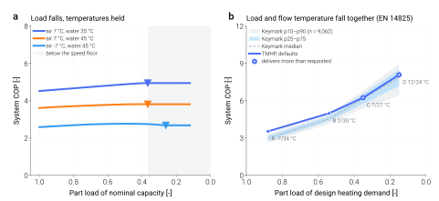

Part-load behaviour¶
This page exists because the assumption it started from turned out to be wrong, and the correction changed what the library does.
The assumption was the familiar one: a real inverter heat pump peaks somewhere around a third of load and falls away below it, so a model whose COP climbs all the way down must be missing something. The plan was to find the missing penalty and put it into the compressor efficiency correlations.
What the certified data actually shows
Heat Pump Keymark is European third-party certification: an accredited laboratory measures to the standard and the declared values are published. Reading 18,106 certified records for 9,162 air-to-water models from 169 manufacturers:
Point |
Outdoor air |
Part load |
COP p10 |
p25 |
median |
p75 |
|---|---|---|---|---|---|---|
A |
−7 °C |
0.88 |
2.61 |
2.78 |
2.99 |
3.18 |
B |
+2 °C |
0.54 |
4.13 |
4.35 |
4.53 |
4.78 |
C |
+7 °C |
0.35 |
5.37 |
5.74 |
6.16 |
6.56 |
D |
+12 °C |
0.15 |
6.40 |
7.19 |
7.88 |
8.51 |
Declared COP rises monotonically from A to D. 97.3 % of models declare a higher COP at the lightest test point than at the next one up, and 96.9 % rise at every single step. The roll-over is not there.
Low-temperature application, average climate. Reproduce with
uv run python -m validation.extraction.keymark_declared.
The reason is straightforward once stated: EN 14825 lowers the flow temperature as it lowers the load — 34/30/27/24 °C from A to D for underfloor heating — so the lift falls together with the duty. The heat exchangers also become large relative to the duty. Both effects push COP up. (This is also why “W35” and “W55” name an application and not a fixed flow temperature; reading them as fixed would put three of the four points at the wrong boundary condition.)
So the goal changed: not to manufacture a roll-over, but to carry the low-speed loss that is genuinely measured, at the size it is measured, and to say plainly what is not modelled.
Two different curves¶


(a) Load falls, temperatures held. (b) Load and flow temperature fall together, as the certification standard specifies. These are not the same question and they do not have the same answer.¶
Panel (a) — fixed temperatures¶
Hold the source and sink where they are and take load away. COP rises, for the
heat-exchanger reason alone: with the three efficiencies frozen at their rated
values the 9 kW air-to-water model gains about 11 % between full load and the
speed floor at 40 %. The low-speed compressor loss eats into that rise – with
the v2026-09-24 correlations, whose leakage term grows with pressure ratio,
it takes back about half of it at 7/42.5 °C (net +5 to +6 %) and all of it at
high lift (−7/32.5 °C: a plateau from 40 % load down to the floor). The
air-to-air model at pressure ratios near 2 keeps most of the heat-exchanger
gain (+20 to +24 % at the floor). None of these shapes is prescribed; they are
the balance of the two effects (validation/fixed_boundary_plr/decompose).
Below that the curve turns over, and the efficiency correlations are not the
cause: a test gates the claim that wherever the modelled COP falls materially
below its peak, the compressor speed equals rps_min.
Below the speed floor the model delivers its minimum capacity, and says so
Once the compressor can go no slower the model cannot follow a smaller request. The tank-side condenser is closed on the heat the machine actually delivers at that speed rather than on the heat that was asked for, so every request below the floor resolves to the same operating point: same speed, same delivered capacity, same condensing temperature, same COP. (Closing it on the request instead made the condensing temperature follow a request the machine could not meet, and the reported COP rose as the request fell.)
Earlier versions matched a sub-floor request anyway by starving the outdoor coil –
the operating-point search minimised absolute electrical input, and among
candidates that all sat at the speed floor the one delivering less heat
also drew less power, so the outdoor fan was driven to its 5 % bound and the
air-side temperature drop reached 17 K against a catalogue maximum near 8 K.
That was a model artefact, and it has been removed: the search now compares
candidates on electrical input per unit of heat delivered and rejects any
that fall short of the request (tmhp._opt_utils). Below the floor the
model therefore reports capacity_clamped == "min" together with the heat
it actually delivers, which exceeds the request – the requested part-load
ratio and the actual capacity ratio are two different numbers, and the
output carries both.
Under the same conditions as before (air 7 °C, water 42.5 °C, 9 kW R32) the outdoor fan now stays above 45 % of rated flow over the whole sweep and the air-side temperature drop stays within 4.1 K; the air-to-air sweep stays above 31 % and 4.8 K. A real machine below its modulation floor cycles, and TMHP still computes no cycling loss (see below), so the sub-floor rows are a continuous-operation figure at the minimum capacity, not a part-load COP. They are drawn hollow in the figures and excluded from every trend verdict.
Panel (b) — the certification trajectory¶
This is the curve that has to match, and it does: the modelled trajectory rises monotonically A → D and sits inside the certified band.
Point |
Condition |
Required load |
Delivered |
TMHP COP |
Keymark median (p10–p90) |
|---|---|---|---|---|---|
A |
−7 °C / 34 °C |
5.28 kW |
5.28 kW |
3.53 |
2.99 (2.61–3.35) |
B |
+2 °C / 30 °C |
3.24 kW |
3.24 kW |
4.99 |
4.53 (4.13–5.01) |
C |
+7 °C / 27 °C |
2.10 kW |
3.50 kW |
6.24 |
6.16 (5.37–6.82) |
D |
+12 °C / 24 °C |
0.90 kW |
4.00 kW |
8.08 |
7.88 (6.40–8.97) |
The model runs optimistic at the cold end — above the 90th percentile at A — and sits inside the band elsewhere: between the 75th and 90th percentiles at B, between the median and the 75th at C and D. That is reported as it stands; no coefficient is adjusted to move it.
One result nobody put in by hand
Look at the delivered column. At points C and D the modelled machine cannot modulate down to the required load and delivers more than the test point asks for — 4.00 kW where 0.90 kW is required.
Certified machines do the same thing. 55 % of Keymark records declare a higher heat output at point D than at point C, which is the signature of a machine sitting on its modulation floor. TMHP reproduces that structure from the speed floor alone; nothing was added to produce it.
What is not modelled¶
TMHP’s low-load COP is a continuous-operation figure
Below its modulation floor a real machine cycles on and off. Every start pushes the refrigerant pressures away from equilibrium and re-warms the heat exchangers, and the standard accounts for that loss with a degradation coefficient applied during seasonal integration. TMHP simulates continuous operation and computes no such loss, so at light load it is optimistic against a machine that cycles, and the size of that optimism is not estimated here.
This is not an oversight to be patched with a fitted penalty. Cuevas & Lebrun make the same point from the hardware side: they observe the low-speed degradation, attribute it to oil starvation, and note that the manufacturer’s own answer is to switch to on/off operation below 35 Hz rather than keep modulating. The loss lives in the cycling, and the cycling is what is absent.
A second caution concerns the degradation coefficient itself, for anyone
tempted to add one. The published values are not interchangeable: EN 14825
writes PLF = 1 − C_d(1 − CR) with C_d = 0.25, while Dongellini writes
f_COP = CR / (1 − C_c + C_c·CR) with C_c = 0.9. Carrying a coefficient
from one formulation into the other means something different by it.
Likewise the horizontal axis. EN 14825 divides by the design heating demand, a quantity that does not depend on temperature; Kinab and Dongellini divide by the full-load capacity at the same temperature, which does. The two differ by roughly a factor of 1.44 over the −7 to +12 °C range, so plotting both on one axis produces a figure that means nothing. Panel (a) and panel (b) above use different denominators for exactly this reason, and are labelled accordingly.
Reproduce¶
uv run python -m validation.extraction.keymark_declared # the certified band
uv run python -m scripts.validation.part_load_figure # both panels
uv run python -m validation.fixed_boundary_plr.sweep # internal-state sweep, both models
uv run python -m validation.fixed_boundary_plr.figure
See also
- Where the defaults come from
The compressor efficiency correlations and the measurements behind them.